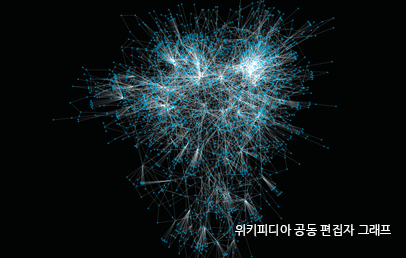
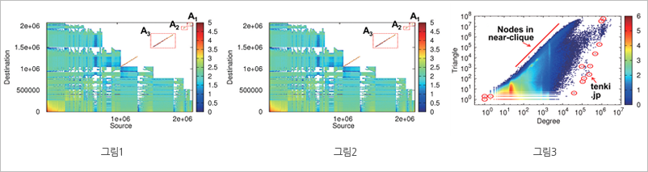

Report by Subjects
Report by Subjects
KAIST RESEARCH ACHIEVEMENTS
Mining Tera-Scale Graphs
(Department: Computer Science) Yu Kang
Summary
Graph mining aims to find patterns and anomalies in graphs which are used to model various objects including computer network, social network, protein-protein interaction network, etc. We propose Tera-scale graph mining system and algorithms, in the area of Eigensolver, tensor, and graph visualization/summarization/anomaly detection, to handle graphs with more than hundreds of billions of nodes spanning hundreds of Terabytes. The proposed system will analyze Tera-scale graphs which could not be handled before, and lead to various applications including recommendation, cyber security, fraud detection, and spammer detection.
R&D Report

Graph has been used to model various objects including computer network, social network, phone call network, protein interactions network, and the Web. Graph mining finds patterns and anomalies from large graphs which lead to many interesting applications including friend recommendation, cyber security, fraud detection, and spammer detection. Previous approaches focused on single-machine based algorithm, and thus they could not analyze big graphs with more than billions of nodes spanning hundreds of Terabytes of storage. Thus, the necessity of analyzing big graphs using distributed machines is growing.
We propose efficient graph mining systems and algorithms for the following three areas.
1. Eigensolver
we propose a distributed algorithm to compute the eigenvalues and eigenvectors of graph adjacency matrices. The proposed algorithm can handle graphs 100 times larger graphs than previous approaches. Furthermore, the proposed algorithm outperforms competitors by 57 times. Using the algorithm, we analyze the triangles of Twitter who-follows-whom graph which could not be analyzed before. We also discovered suspicious adult accounts from Twitter.
2. Tensor
Tensor, or multi-dimensional array, is used to model time evolving graphs. In this research we propose a distributed algorithm to analyze large scale tensors. The proposed algorithm handles tensor data 100 times larger than previous algorithms by dramatically reducing the intermediate data size.
3. Graph visualization, summarization, and anomaly detection
we propose a method to summarize, visualize, and detect anomalies from billion-scale graphs. Previous approaches require to load all the graph data into memory, and thus could not handle big graphs. On the other hand, the proposed method effectively visualizes graphs by utilizing distributed systems, and exploiting efficient graph summarization methods.

Fig 1. Spy plot of U.S. patent graph. Note the discovered communities labeled A1, A2, and A3.
Fig 2. Anomalous adults sites discovered from the triangle distribution plot of YahooWeb graph.
Fig 3. Degree vs. Triangle plot of Twitter graph. Note the highly connected accounts in the upper-left corner, and sparsely connected accounts in the lower-right corner.
Expectation Effectiveness
This research opens new opportunities for mining Tera-scale big graphs which could not be analyzed before. We expect that the research will lead to various applications including friend recommendation, cyber security, fraud detection, and spammer detection.
Research Results
ㆍDeveloped Pegasus, an open source big graph mining package. | The software is included in the Hadoop distribution in Windows Azure, the OS for enterprise servers from Microsoft.
ㆍFiled 2 U.S. patents.
ㆍ2 best paper awards in top international conferences (IEEE ICDM, PAKDD)